Περιγραφή των διαφορετικών τύπων Η.Ε.
Χρήσιμοι ορισμοί
- Business model (Επιχειρηματικό μοντέλο) Σύνολο σχεδιασμένων ενεργειών που αποσκοπούν σε κέρδος σε μια αγορά.
- Business plan (Επιχειρηματικό πλάνο) Η τεκμηρίωση που περιγράφει το επιχειρηματικό μοντέλο μιας εταιρείας.
- e-commerce business model (Επιχειρηματικό μοντέλο Η.Ε.) Το μοντέλο που χρησιμοποιεί και εκμεταλεύεται τα μοναδικά ωφέλη του διαδικτύου και του web.
- Μarketspace (Αγορά) Ο χώρος αγοράς πραγματικής ή δυναμικής εμπορικής αξίας όπου η επιχείρηση πρόκειται να δραστηριοποιηθεί.
Στοιχεία του επιχειρηματικού μοντέλου
Τα παρακώτω στοιχεία είναι απαραίτητα στον σχεδιασμό και ανάπτυξη ενός επιχειρηματικού μοντέλου
- Value Proposition Ορίζει πως το προϊόν ή υπηρεσία καλύπτουν τις ανάγκες του καταναλωτή.
- Revenue Model Ορίζει πως η εταιρεία θα έχει έσοδα, κέρδη και μέγιστη επιστροφή κέρδους από τις επενδύσεις.
- Market Opportunity Αναφέρεται στην αγορά που στοχεύει η εταιρεία και στις ευκαιρίες που παρουσιάζονται.
- Competitive Advantage Αναφέρεται στο συγκριτικό πλεονέκτημα όπου η εταιρεία προσφέρει φθηνότερα και καλύτερα προϊόντα ή υπηρεσίες.
- Market Strategy Το πλάνο με λεπτομέρειες που θα χρησιμοποιηθεί για την εισαγωγή της εταιρείας στην αγορά και πως θα έλξει πελάτες.
- Organizational Development Αναφέρεται στη σωστή οργάνωση που πρέπει η εταιρεία να ακολουθήσει για να καλύψει τους στόχους της.
- Management Team Η ομάδα διαχείρισης που θα αναλάβει να φέρει σε επιτυχία το επιχειρηματικό μοντέλο.
- Raising capital Εύρεση κεφαλαίων (crowdfunding).
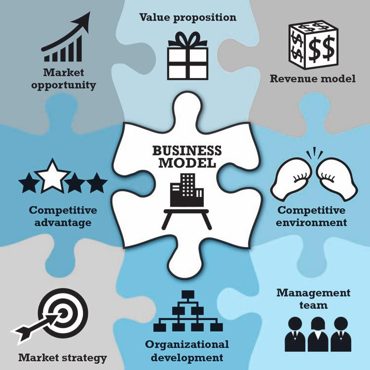
Τύποι Η.Ε.
Υπάρχουν 6 διαφορετικοί τύποι Η.Ε. (e-commerce)
B2C (Business to Consumer)
Περιλαμβάνει τις επιχειρήσεις που αναφέρονται στο ευρύ καταναλωτικό κοινό.
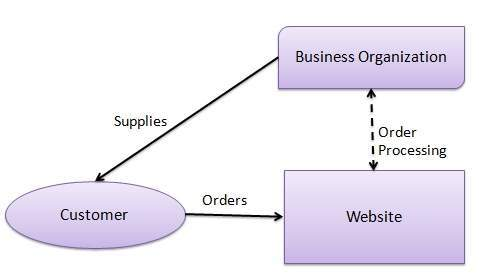
Στο b2c οι πωλήσεις γίνοναι απ' ευθείας στον καταναλωτή και δεν χρειάζονται οι κλασικοί μεσάζοντες.
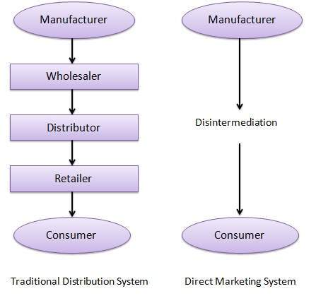
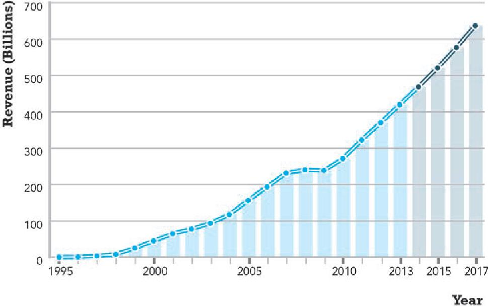
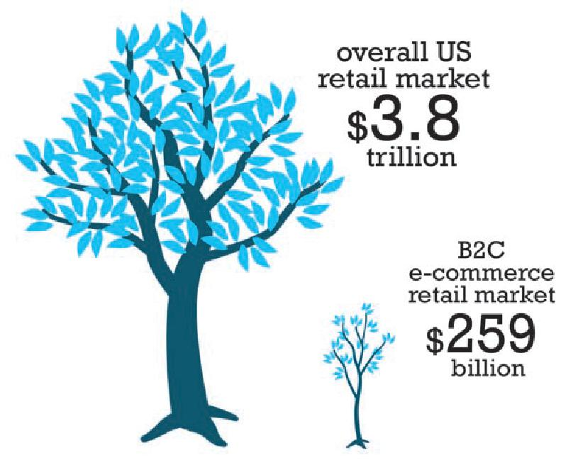
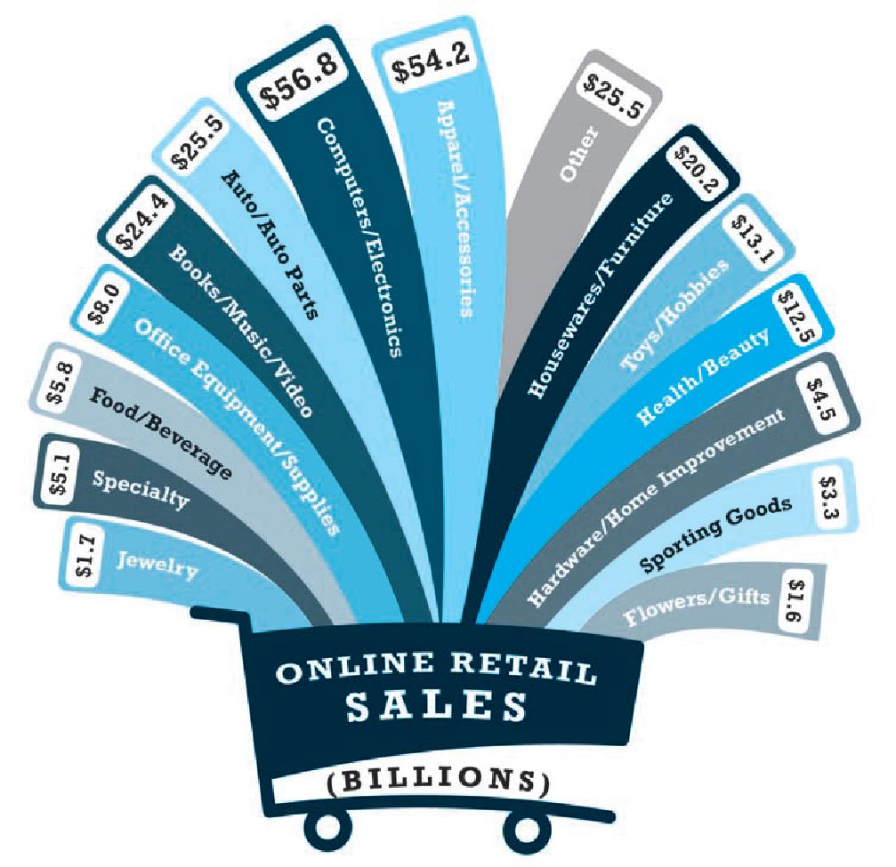
B2C Επιχειρηματικά μοντέλα (business models)
Μπορούμε να διακρίνουμε τα παρακάτω επιχειρηματικά μοντέλα.
- Portal Προσφέρει εργαλεία για αναζήτηση, περιεχόμενο, υπηρεσίες κ.λπ. και έχει εισοδήματα από μία σειρά πηγών. Μπορεί να είναι και vortal (σε ποιο περιορισμένη και συγκεκριμένη περιοχή δραστηριότητων).
- E-tailer Παραδοσιακό εμπόριο σε online έκδοση. Μπορεί να είναι ένας εικονικός έμπορος για online λιανική μόνο (click retailer) ή (bricks-and-clicks retailer) όπου διαθέτει και φυσικό κατάστημα. Αυτοί πουλάνε κατευθείαν στον καταναλωτή.
- Content provider (Πάροχος περιεχομένου) Περέχουν περιεχόμενο σε ψηφιακή μορφή για ενημέρωση και διασκέδαση ή ψυχαγωγία.
- Transaction broker (Μεσίτης) Κερδίζει από προμήθειες για συναλλαγές που αναλαμβάνει ανάμεσα σε δύο ή περισσότερους συναλλασόμενους.
- Market creator (Δημιουργός αγοράς) Χρησιμοποιεί το διαδίκτυο για να φέρει κοντά αγοραστές και πωλητές για εισπράτει κάποια προμήθεια από τις συναλλαγές.
- Service provider (Πάροχος υπηρεσιών) Παρέχει υπηρεσίες online.
- Community provider (Πάροχος κοινωνικών δικτύων) Παρέχει την πλατφόρμα για μέλη με κοινά ενδιαφέροντα όπου ανταλλάσουν πληροφορίες, σκέψεις, γνώμες κ.λπ. (forums).
B2B (Business to Business)
Περιλαμβάνει τις επιχειρήσεις που πουλάνε σε επιχειρήσεις και καλύπτει τον μεγαλύτερο όγκο (σε οικονομικούς όρους) στο Η.Ε.
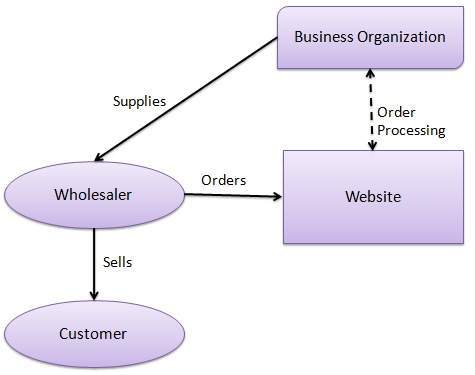
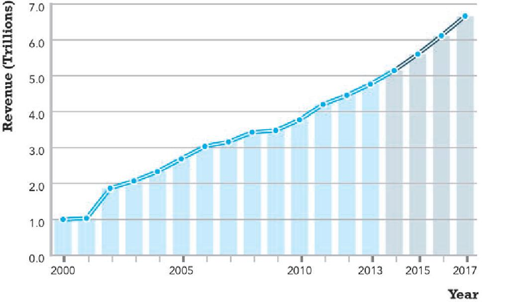
C2C (Consumer to Consumer)
Περιλαμβάνει συναλλαγές ανάμεσα σε καταναλωτές ή χρήστες όπου, για παράδειγμα ένας χρήστης πουλάει σε κάποιον άλλον. Για αυτέςε τις συναλλαγές απαιτείται μια ηλεκτρονική αγορά που θα παρέχει σε πωλητές και αγοραστές, καταλόγους, μηχανές αναζήτησης, ασφάλεια, τρόπους πληρωμής κ.λπ..
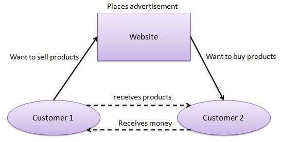
C2B (Consumer to Business)
Περιλαμβάνει συναλλαγές ανάμεσα σε καταναλωτές και πωλητές (εταιρείες). Ο πελάτης προτείνει το προϊόν και το ποσό που προτίθεται να δώσει και οι εταιρείες κάνουν τις προτάσεις τους.
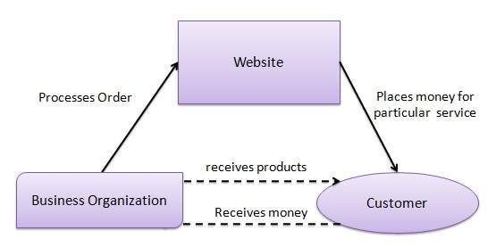
Μπορούμε να διακρίνουμε τα παρακάτω επιχειρηματικά μοντέλα.
- E-distributor (Διανομέας) Παρέχει προϊόντα κατευθείαν σε επιχειρήσεις.
- E-procurement (Συμβάσεις) Δημιουργούν αγορές για πολλούς αγοραστές και πωλητές.
- Exchange Ανεξάρτηση ψηφιακή αγορά (συνήθως από έναν βιομηχανικό όμιλο) για απευθείας συναλλαγές με επιχειρήσεις
- Industry consortium (Βιομηχανική κοινοπραξία). Ψηφιακή αγορά που ανήκει στην κοινοπραξία.
- Private industrial network (Ιδιωτικό βιομηχανικό δίκτυο) Ιδιωτικό δίκτυο για συντονισμό της αλυσίδας τροφοδοσίας σε περιορισμένο αριθμό συνεργατών.
B2G (Business to Government)
G2B (Government to Business)
G2C (Government to Citizen)
Social
Περιλαμβάνει το Η.Ε. που γίνεται μέσα από κοινωνικά δίκτυα.
M-commerce
Περιλαμβάνει το Η.Ε. που γίνεται μέσω κινητών συσκευών.
Local (Τοπικό)
Περιλαμβάνει το Η.Ε. που είναι τοπικά προσανατολισμένο.
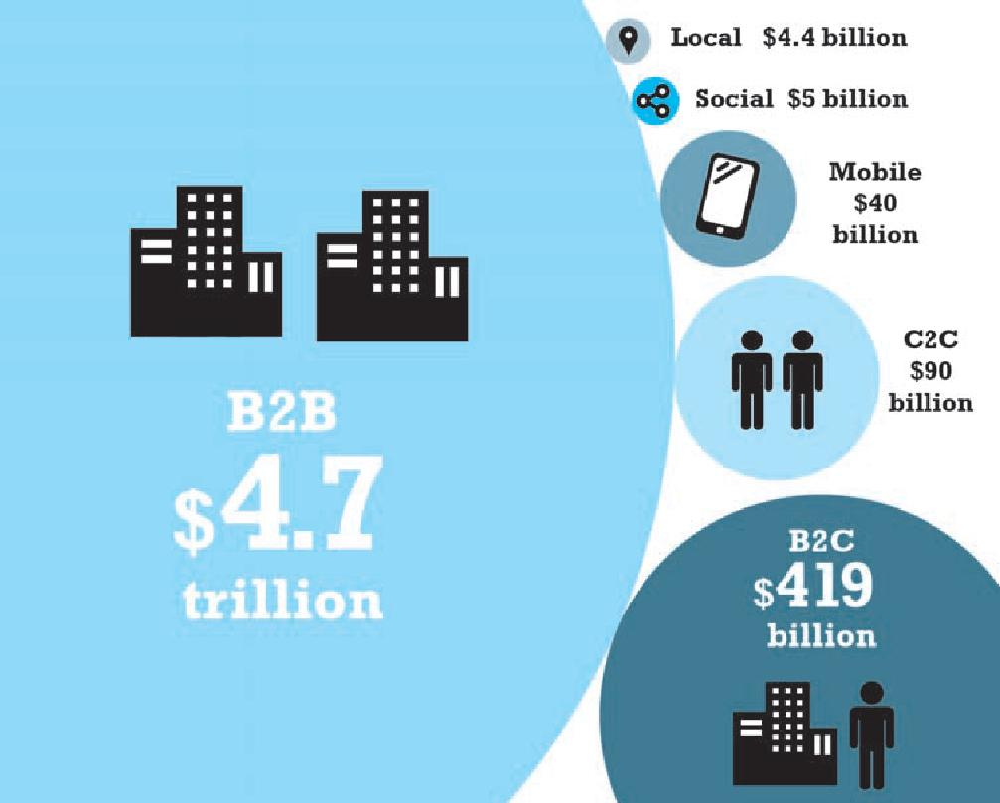
Crowdfunding (συμμετοχική χρηματοδότηση)
Crowdfunding αναφέρεται στη χρηματοδότηση ενός έργου ή μιας επιχειρηματικής ιδέας από έναν μεγάλο αριθμό ανθρώπων μέσω του διαδικτύου. Το Crowdfunding είναι μια εναλλακτική μορφή χρηματοδότησης που ξεφεύγει από το παραδοσιακό τραπεζικό σύστημα.
Το μοντέλο βασίζεται σε τρεις οντότητες ή συμμετέχοντες:
- Τον δημιουργό ή creator του έργου ή ιδέας
- Τα φυσικά πρόσωπα ή ομάδες που υποστηρίζουν την ιδέα (backers)
- Την πλατφόρμα που παρέχει όλα τα μέσα για να έρθουν τα δύο παραπάνω μέρη σε συνεργασία
Το 2013 διατέθηκαν πάνω από 5,1 δις παγκοσμίως σε crowdfunding έργα.
Είδη crowdfunding
Χωρίζονται σε δύο κατηγορίες ανάλογα με το αντίτιμο του χρηματοδότη (backer).
- Rewards Crowdfunding
- Equity Crowdfunding
Δημοφιλή sites
- gofundme.com
- kickstarter.com
- indiegogo.com